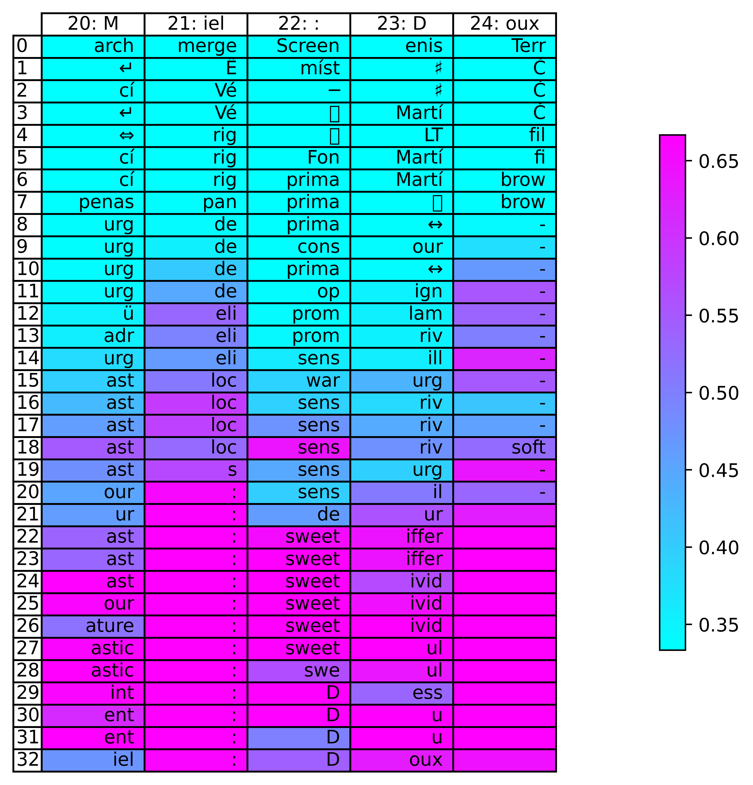
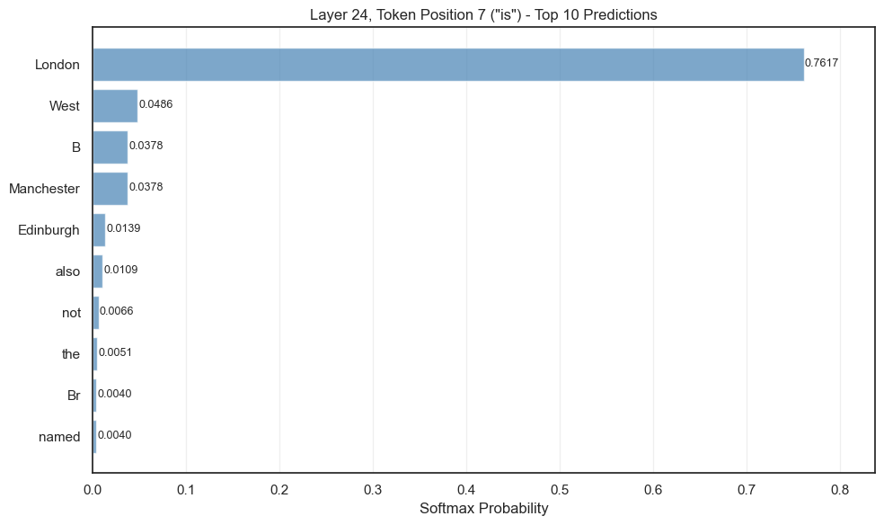
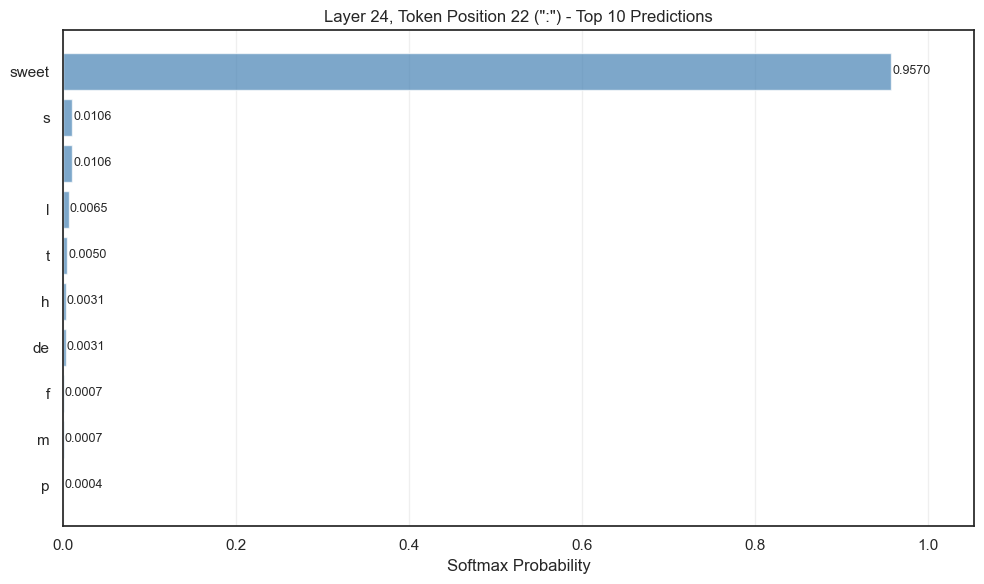
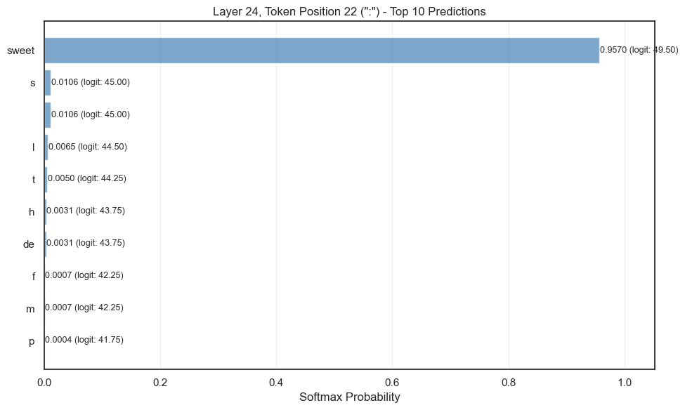

import matplotlib.pyplot as plt
from matplotlib.colors import LogNorm
import numpy as np
import torch
import torch.nn as nn
from tqdm import tqdm
from transformers import AutoTokenizer, AutoModelForCausalLM# Clear MPS cache
if torch.backends.mps.is_available():
torch.mps.empty_cache()
# Also clear any cached gradients
import gc
gc.collect()35device = "mps" if torch.backends.mps.is_available() else "cpu"
model_name = "microsoft/phi-3-mini-4k-instruct"
model = AutoModelForCausalLM.from_pretrained(
model_name).to(device)
tokenizer = AutoTokenizer.from_pretrained(model_name)
modelPhi3ForCausalLM(
(model): Phi3Model(
(embed_tokens): Embedding(32064, 3072, padding_idx=32000)
(layers): ModuleList(
(0-31): 32 x Phi3DecoderLayer(
(self_attn): Phi3Attention(
(o_proj): Linear(in_features=3072, out_features=3072, bias=False)
(qkv_proj): Linear(in_features=3072, out_features=9216, bias=False)
)
(mlp): Phi3MLP(
(gate_up_proj): Linear(in_features=3072, out_features=16384, bias=False)
(down_proj): Linear(in_features=8192, out_features=3072, bias=False)
(activation_fn): SiLUActivation()
)
(input_layernorm): Phi3RMSNorm((3072,), eps=1e-05)
(post_attention_layernorm): Phi3RMSNorm((3072,), eps=1e-05)
(resid_attn_dropout): Dropout(p=0.0, inplace=False)
(resid_mlp_dropout): Dropout(p=0.0, inplace=False)
)
)
(norm): Phi3RMSNorm((3072,), eps=1e-05)
(rotary_emb): Phi3RotaryEmbedding()
)
(lm_head): Linear(in_features=3072, out_features=32064, bias=False)
)text = "Citron: Acide\nSucre: Sucré\nPiment: Épicé\nMiel:"
text_tokenized = tokenizer.encode(text, return_tensors="pt").to(device)
output = model.generate(text_tokenized, num_beams=4, max_new_tokens=3, do_sample=True)
text_decoded = tokenizer.decode(output[0])
print(text_decoded)The attention mask is not set and cannot be inferred from input because pad token is same as eos token. As a consequence, you may observe unexpected behavior. Please pass your input's `attention_mask` to obtain reliable results.Citron: Acide
Sucre: Sucré
Piment: Épicé
Miel: Doux
def decode_token_with_logitlens(model, device, tokenizer, input, tokens_to_gen=None):
'''
outputs a dictionary with {'decoded_tokens': [num_layers, seq_len], 'decoded_logits': [num_layers, seq_len]}
'''
inputs = tokenizer(input, return_tensors="pt").to(device)
text = tokenizer.decode(inputs['input_ids'][0])
# run the loop to generate new tokens after input, append to input and decode
if tokens_to_gen != None:
# generate new tokens all at once; then append them to input, then logitlens them all
output = model.generate(
inputs['input_ids'],
do_sample=True,
top_p=0.95,
temperature=0.001,
top_k=0,
max_new_tokens=tokens_to_gen,
)
new_token = tokenizer.decode(output[0][-tokens_to_gen:])
text += new_token
inputs = tokenizer(text, return_tensors="pt").to(device)
text_tokens = [tokenizer.decode(id) for id in inputs['input_ids'][0]]
# apply decoder lens
classifier_head = model.lm_head # Linear(in_features=3072, out_features=32064, bias=False)
hidden_states = model(**inputs, output_hidden_states = True).hidden_states
decoded_intermediate_token = {}
decoded_intermediate_logit = {}
with torch.no_grad():
for layer_id in range(len(hidden_states)):
hidden_state = hidden_states[layer_id]
decoded_value = classifier_head(hidden_state) # [batch, seq_len, vocab_size]
# get probabilities
decoded_values = torch.nn.functional.softmax(decoded_value, dim=-1)
# take max element
argmax = torch.argmax(decoded_values, dim=-1)[0] # select first element in batch
# decode all tokens
decoded_token = [tokenizer.decode(int(el)) for el in argmax]
decoded_logit = [decoded_values[0, it, argmax[it]].item() for it in range(len(argmax))] # list of layers, per layer the sequence_length
decoded_intermediate_token[layer_id] = decoded_token
decoded_intermediate_logit[layer_id] = decoded_logit
tokens = list(decoded_intermediate_token.values()) # [num_layers, seq_len]
logits = list(decoded_intermediate_logit.values()) # [num_layers, seq_len]
return {'text_tokens':text_tokens, 'decoded_tokens': tokens, 'decoded_logits': logits}dict_output = decode_token_with_logitlens(model, device, tokenizer, text, tokens_to_gen=2)
decoded_tokens = dict_output['decoded_tokens']
decoded_logits = dict_output['decoded_logits']
text_tokens = dict_output['text_tokens']
print(len(text_tokens), text_tokens)25 ['Cit', 'ron', ':', 'A', 'cide', '\n', 'Su', 'cre', ':', 'S', 'uc', 'ré', '\n', 'P', 'iment', ':', 'É', 'pic', 'é', '\n', 'M', 'iel', ':', 'D', 'oux']for element in range(len(decoded_tokens)):
print(decoded_tokens[element])['izen', 'unci', 'Screen', 'bove', 'zat', 'Datos', 'ites', 'opening', 'Screen', 'orted', 'Stra', 'imas', 'Datos', 'rior', 'Db', 'Screen', 'cze', 'éd', 'parc', 'Datos', 'arch', 'merge', 'Screen', 'enis', 'Terr']
['míst', '☺', 'míst', 'míst', '🌍', 'míst', 'becom', 'míst', 'míst', '↵', '\x97', '̶', 'míst', '↵', 'hbox', 'míst', '̶', '\x97', '☺', 'míst', '↵', 'Ê', 'míst', '♯', 'Č']
['míst', '☺', 'míst', 'míst', '', 'míst', 'cí', 'míst', 'míst', 'míst', '›', '̶', 'míst', 'míst', 'ão', 'míst', '̶', '�', '☺', 'míst', 'cí', 'Vé', '─', '♯', 'Č']
['option', 'Niem', '\x97', 'mí', 'has', '\x97', '马', 'pick', 'infatti', '⇔', '›', 'men', '\x97', 'OL', 'wind', '\x97', '⇔', 'Sver', 'living', '\x97', '↵', 'Vé', '\x97', 'Martí', 'Č']
['option', 'ouc', 'highly', 'ero', 'practices', '\x97', 'ivi', 'int', 'infatti', 'míst', 'lande', 'ợ', '', 'OL', 'al', '\x97', '⟶', 'nic', 'surr', '\x97', '⇔', 'rig', '\x97', 'LT', 'fil']
['option', 'r', 'Fich', 'mí', 'ity', '', '⟶', 'at', 'Fich', 'echter', 'uro', 'exclus', '', 'urg', 'tab', 'Fon', '🌍', 'nick', 'bean', '', 'cí', 'rig', 'Fon', 'Martí', 'fi']
['option', 'ville', 'alberga', 'dynamically', 'ogen', '', '♦', 'abet', 'ば', 'míst', '☺', 'ones', '', 'cí', 'anu', '⇔', 'Err', 'urg', 'itos', '', 'cí', 'rig', 'prima', 'Martí', 'brow']
['option', '\u2009', '⇔', 'ero', 'gra', '', 'pon', 'LES', 'cogn', '⇔', '☺', 'ば', '', 'cí', 'ão', '⇔', 'Err', 'ere', '➖', '', 'penas', 'pan', 'prima', '\x97', 'brow']
['option', '\u2009', '⇔', 'dynamically', 'ity', '✔', 'cre', 'ville', 'prima', 'OL', 'loc', 'emer', '', 'urg', 'on', 'prima', 'cot', 'ere', 'acon', '', 'urg', 'de', 'prima', '↔', '-']
['option', 'isch', '{\r', 'oret', 'de', '↔', 'cre', 'de', 'prima', 'urg', 'loc', 'taste', 'ext', 'OL', 'on', 'cons', 'aster', 'ere', 'ol', 'ext', 'urg', 'de', 'cons', 'our', '-']
['option', 'soft', '{\r', 'war', 'de', '✅', 'pon', 'de', 'pre', 'urg', 'loc', ']],', 'odor', 'FA', 'on', 'pre', 'cot', 'ere', 'flav', 'soft', 'urg', 'de', 'prima', '↔', '-']
['option', 'iar', '{\r', 'результате', 'de', 'con', 'oc', 'de', 'pre', 'urg', 'ita', 'exc', 'soft', 'ü', 'on', 'pre', 'oc', 'результате', 'ien', 'soft', 'urg', 'de', 'op', 'ign', '-']
['option', 'iar', '{\r', 'war', 'de', '});\r', 'qu', 'de', 'pre', 'eng', 'е', 'sens', 'soft', 'ü', 'on', 'pre', 'ol', 'ere', 'ien', 'soft', 'ü', 'eli', 'prom', 'lam', '-']
['option', 'iar', '{\r', 'ali', 'ity', '});\r', 'con', 'de', 'prom', 'eng', 'ill', 'Tout', 'soft', 'ü', 'on', 'rig', 'lam', 'ere', 'flav', 'etc', 'adr', 'eli', 'prom', 'riv', '-']
['option', 'ica', '{\r', 'ali', 'de', '{\r', 'im', 'de', 'li', 'urg', 'ub', 'de', 'adr', 'urg', 'on', 'sens', 'lam', 'ere', '/', 'etc', 'urg', 'eli', 'sens', 'ill', '-']
['option', 'ica', '{\r', 'ali', 'ity', '{\r', 'ver', 'de', 'li', 'urg', 'ub', 'ais', '\ufeff', 'urg', 'on', 'sens', 'vol', 'ere', 'option', 'etc', 'ast', 'loc', 'war', 'urg', '-']
['option', 'ica', '{\r', 'myster', 'ity', '{\r', 'ft', 'de', 'ase', 'urg', 'amer', ']]', '{`', 'urg', 'on', 'sens', 'lam', 'ere', 'option', 'etc', 'ast', 'loc', 'sens', 'riv', '-']
['option', 'ica', '{\r', 'lem', 'de', '});\r', 'pect', 'de', 'sens', 'urg', 'ub', '\ufeff', 'etc', 'urg', 'on', 'sens', 'vol', 'ere', '/', 'etc', 'ast', 'loc', 'sens', 'riv', '-']
['option', 'ic', '{\r', 'lem', 'de', '});\r', 'ft', 'de', 'sens', 'ill', 'ub', '"}', '{`', 'urg', 'al', 'sens', 'vol', 'enter', 'taste', 'etc', 'ast', 'loc', 'sens', 'riv', 'soft']
['option', 'et', '{\r', 'modern', 'de', '<|endoftext|>', 'il', 'de', '', 'our', 'ub', '/', '{`', 'urg', 'al', 'sens', 'vol', 'enter', '/', '<|endoftext|>', 'ast', 's', 'sens', 'urg', '-']
['option', 'et', '{\r', 'compreh', 'de', ' ', 'il', 'de', 'b', 'our', 'ub', '\n', 'etc', 'urg', 'al', 'sens', 'vol', 'enter', '/', 'etc', 'our', ':', 'sens', 'il', '-']
['option', 'et', '{\r', 'compreh', 'de', '{\r', 'ven', 'de', '', 'our', 'our', '\n', 'etc', 'eg', 'al', 'sens', 'vol', 'enter', '<|endoftext|>', 'etc', 'ur', ':', 'de', 'ur', '\n']
['option', 'et', '{\r', 'Sidenote', 'de', '\t', 'ffic', 'de', '', 'uc', 'ub', '\n', 't', 'eg', 'al', 's', 'vol', 'enter', '\n', '<|endoftext|>', 'ast', ':', 'sweet', 'iffer', '\n']
['option', 'et', '\r', 'Sidenote', 'de', '✅', 'plement', ':', '', 'que', 'urs', '\n', 't', 'eg', 'o', 'd', 'vol', 'enter', '/', 'le', 'ast', ':', 'sweet', 'iffer', '\n']
['option', 'et', '"', 'Sidenote', 'ac', '✅', 'plement', ':', '', 'uc', 'rose', '\n', '', 'ast', 'ary', 'bitter', 'vol', 'enter', '\n', '<|endoftext|>', 'ast', ':', 'sweet', 'ivid', '\n']
['option', 'et', '"', 'Sidenote', 'le', '', 'plement', ':', 'sugar', 'weet', 'rose', '\n', 'gr', 'ast', 'de', 'bitter', 'vol', 'enter', '\n', 'c', 'our', ':', 'sweet', 'ivid', '\n']
['option', 'et', '', 'Sidenote', 'ac', '', 'plement', ':', 'Sug', 'weet', 'rose', '\n', 'c', 'ig', ':', 'hot', 'vol', 'enter', '\n', 'c', 'ature', ':', 'sweet', 'ivid', '\n']
['option', 'et', 'Sidenote', 'Sidenote', 'ac', '', 'plement', ':', 'sol', 'weet', 'rose', '\n', '', 'iment', ':', 'sp', 'colog', 'enter', '\n', 'D', 'astic', ':', 'sweet', 'ul', '\n']
['option', 'et', 'Sidenote', 'Sidenote', 's', '', 'plement', ':', '', 'uc', 'rose', '\n', '', 'iment', ':', 'sp', 'per', 'et', '\n', 'po', 'astic', ':', 'swe', 'ul', '\n']
['option', 'et', '', 'Sidenote', '', '', 'cc', ':', '', 'atur', 'id', '\n', '', 'iment', ':', '', 'per', 'ur', '\n', '', 'int', ':', 'D', 'ess', '\n']
['Ł', 'et', '', 'Sidenote', '', '\n', 'cre', ':', '', 'uc', 'rose', '\n', '', 'iment', ':', '', 'per', 'ur', '\n', 'A', 'ent', ':', 'D', 'u', '\n']
['\u202f', 'i', '', '', '', '\n', 'it', ':', '', 'uc', 'rose', '\n', '\n', 'ain', ':', 'A', 'p', 'ur', '\n', '\n', 'ent', ':', 'D', 'u', '\n']
['izen', 'ella', '\n', 'Cit', 'cit', '\n', 'ivi', ':', 'Gl', 'uc', 'ré', '\n', '\n', 'om', ':', 'A', 'pic', 'é', '\n', 'C', 'iel', ':', 'D', 'oux', '\n']tokens_viz = [tok for tok in decoded_tokens] # [num_layers, num_tokens]
logits_viz = np.array([log for log in decoded_logits]) # [num_layers, num_tokens]
a = [it for it in range(len(text_tokens))]
b = [tok for tok in text_tokens]
col_labels = [str(a_)+': '+b_ for a_, b_ in zip(a, b)]
norm = plt.Normalize(logits_viz.min()-1, logits_viz.max()+1)
colours = plt.cm.cool(norm(logits_viz))
fig, ax = plt.subplots(figsize=(20,5), dpi=1000)
# hide axes
fig.patch.set_visible(False)
ax.axis('off')
ax.axis('tight')
img = plt.imshow(norm(logits_viz), cmap="cool")
plt.colorbar()
img.set_visible(False)
ax.table(cellText=tokens_viz, rowLabels=[lay for lay in range(len(decoded_tokens))], colLabels=col_labels, colWidths = [0.2]*logits_viz.shape[1], loc='center', cellColours=img.to_rgba(norm(logits_viz)))
plt.show()/Users/fletcaw1/Documents/Personal/personal-repos/andrewstephenfletcher.github.io/.venv/lib/python3.12/site-packages/IPython/core/pylabtools.py:170: UserWarning: Glyph 127757 (\N{EARTH GLOBE EUROPE-AFRICA}) missing from font(s) DejaVu Sans.
fig.canvas.print_figure(bytes_io, **kw)
/Users/fletcaw1/Documents/Personal/personal-repos/andrewstephenfletcher.github.io/.venv/lib/python3.12/site-packages/IPython/core/pylabtools.py:170: UserWarning: Glyph 151 (\x97) missing from font(s) DejaVu Sans.
fig.canvas.print_figure(bytes_io, **kw)
/Users/fletcaw1/Documents/Personal/personal-repos/andrewstephenfletcher.github.io/.venv/lib/python3.12/site-packages/IPython/core/pylabtools.py:170: UserWarning: Glyph 39532 (\N{CJK UNIFIED IDEOGRAPH-9A6C}) missing from font(s) DejaVu Sans.
fig.canvas.print_figure(bytes_io, **kw)
/Users/fletcaw1/Documents/Personal/personal-repos/andrewstephenfletcher.github.io/.venv/lib/python3.12/site-packages/IPython/core/pylabtools.py:170: UserWarning: Glyph 12400 (\N{HIRAGANA LETTER BA}) missing from font(s) DejaVu Sans.
fig.canvas.print_figure(bytes_io, **kw)
/Users/fletcaw1/Documents/Personal/personal-repos/andrewstephenfletcher.github.io/.venv/lib/python3.12/site-packages/IPython/core/pylabtools.py:170: UserWarning: Glyph 10134 (\N{HEAVY MINUS SIGN}) missing from font(s) DejaVu Sans.
fig.canvas.print_figure(bytes_io, **kw)
) missing from font(s) DejaVu Sans.personal-repos/andrewstephenfletcher.github.io/.venv/lib/python3.12/site-packages/IPython/core/pylabtools.py:170: UserWarning: Glyph 13 (
fig.canvas.print_figure(bytes_io, **kw)
/Users/fletcaw1/Documents/Personal/personal-repos/andrewstephenfletcher.github.io/.venv/lib/python3.12/site-packages/IPython/core/pylabtools.py:170: UserWarning: Glyph 9989 (\N{WHITE HEAVY CHECK MARK}) missing from font(s) DejaVu Sans.
fig.canvas.print_figure(bytes_io, **kw)
/Users/fletcaw1/Documents/Personal/personal-repos/andrewstephenfletcher.github.io/.venv/lib/python3.12/site-packages/IPython/core/pylabtools.py:170: UserWarning: Glyph 9 ( ) missing from font(s) DejaVu Sans.
fig.canvas.print_figure(bytes_io, **kw)
# Find where "Miel: Doux" tokens start
search_text = "Miel: Doux"
full_text = ''.join(text_tokens)
# Find the token indices for "Miel: Doux"
# First, let's see which tokens contain these characters
miel_start_idx = None
for i, token in enumerate(text_tokens):
if "Miel" in token:
miel_start_idx = i
break
# Print to see what we found
print(f"Full text tokens: {text_tokens}")
print(f"Miel starts at token index: {miel_start_idx}")
# Let's look at a few tokens around "Miel:"
if miel_start_idx is not None:
# Show tokens from Miel onwards (adjust range as needed)
to_viz = (miel_start_idx, min(miel_start_idx + 5, len(text_tokens)))
else:
# Fallback: show last few tokens if we can't find "Miel"
to_viz = (max(0, len(text_tokens) - 5), len(text_tokens))
print(f"Visualizing tokens {to_viz[0]} to {to_viz[1]}: {text_tokens[to_viz[0]:to_viz[1]]}")
tokens_viz = [tok[to_viz[0]:to_viz[1]] for tok in decoded_tokens]
logits_viz = np.array([logit[to_viz[0]:to_viz[1]] for logit in decoded_logits])
a = [it for it in range(to_viz[0], to_viz[1])]
b = [tok for tok in text_tokens[to_viz[0]:to_viz[1]]]
col_labels = [str(a_)+': '+b_ for a_, b_ in zip(a, b)]
norm = plt.Normalize(logits_viz.min()-1, logits_viz.max()+1)
colours = plt.cm.cool(norm(logits_viz))
fig, ax = plt.subplots(figsize=(20,5), dpi=1000)
fig.patch.set_visible(False)
ax.axis('off')
ax.axis('tight')
img = plt.imshow(norm(logits_viz), cmap="cool")
plt.colorbar()
img.set_visible(False)
ax.table(cellText=tokens_viz, rowLabels=[lay for lay in range(len(decoded_tokens))], colLabels=col_labels, colWidths = [0.2]*logits_viz.shape[1], loc='center', cellColours=img.to_rgba(norm(logits_viz)))
plt.show()Full text tokens: ['Cit', 'ron', ':', 'A', 'cide', '\n', 'Su', 'cre', ':', 'S', 'uc', 'ré', '\n', 'P', 'iment', ':', 'É', 'pic', 'é', '\n', 'M', 'iel', ':', 'D', 'oux']
Miel starts at token index: None
Visualizing tokens 20 to 25: ['M', 'iel', ':', 'D', 'oux']
import matplotlib.pyplot as plt
import seaborn as sns
import numpy as np
def plot_pretty_logit_lens(tokens_viz, logits_viz, text_tokens, start_idx, end_idx, start_layer=0):
"""
Creates a professional Logit Lens visualization.
"""
# Filter to only show layers from start_layer onwards
tokens_viz = tokens_viz[start_layer:]
logits_viz = logits_viz[start_layer:]
# 1. Setup Data Labels
# Rows: Layers, Columns: Pos + Token
row_labels = [f"Layer {i}" for i in range(start_layer, start_layer + len(tokens_viz))]
col_labels = [f"{i}: {text_tokens[i]}" for i in range(start_idx, end_idx)]
# 2. Styling Parameters
plt.figure(figsize=(max(12, len(col_labels)*2), len(row_labels)*0.6))
sns.set_theme(style="white")
# 3. Create Heatmap
# We use logits_viz for the colors and tokens_viz for the text annotations
ax = sns.heatmap(
logits_viz,
annot=tokens_viz,
fmt="", # We are passing strings, so no formatting
cmap="mako", # Standard, readable colormap (try 'magma' or 'viridis' too)
linewidths=0.5,
linecolor='white',
cbar_kws={'label': 'Logit Magnitude'},
xticklabels=col_labels,
yticklabels=row_labels,
annot_kws={"size": 10, "weight": "bold"}
)
# 4. Refine Labels
ax.xaxis.tick_top() # Move tokens to the top for easier reading
ax.xaxis.set_label_position('top')
plt.xticks(rotation=45, ha='left')
plt.yticks(rotation=0)
plt.title("Logit Lens: Evolution of Token Predictions", pad=40, fontsize=16)
plt.tight_layout()
plt.savefig(
"images/logit_lens_viz.svg",
format='svg',
bbox_inches='tight',
transparent=False,
metadata={'Creator': 'Logit Lens Visualizer'}
)
plt.show()
# --- Integration with your existing variables ---
# Extract the slice of data needed
s_idx, e_idx = to_viz
final_tokens = [lay[s_idx:e_idx] for lay in decoded_tokens]
final_logits = np.array([logit[s_idx:e_idx] for logit in decoded_logits])
# Call with start_layer=12 to begin at Layer 12
plot_pretty_logit_lens(final_tokens, final_logits, text_tokens, s_idx, e_idx, start_layer=12)
import matplotlib.pyplot as plt
import torch
inputs = tokenizer(text, return_tensors="pt").to(device)
# Get the hidden state at layer 24, token position 22
layer_24_hidden = model(**tokenizer(tokenizer.decode(inputs['input_ids'][0]),
return_tensors="pt").to(device),
output_hidden_states=True).hidden_states[22]
# Apply classifier head to get logits for all vocabulary
with torch.no_grad():
logits = model.lm_head(layer_24_hidden[0, 22, :]) # [vocab_size]
probs = torch.nn.functional.softmax(logits, dim=-1)
# Get top 10
top_10_probs, top_10_indices = torch.topk(probs, 10)
# Decode tokens
top_10_tokens = [tokenizer.decode(int(idx)) for idx in top_10_indices]
top_10_probs = top_10_probs.float().cpu().numpy() # Convert to float32 first
# Reverse for display (highest at top)
top_10_tokens = top_10_tokens[::-1]
top_10_probs = top_10_probs[::-1]
# Create horizontal bar chart
fig, ax = plt.subplots(figsize=(10, 6))
y_positions = range(len(top_10_tokens))
ax.barh(y_positions, top_10_probs, color='steelblue', alpha=0.7)
ax.set_yticks(y_positions)
ax.set_yticklabels([f"{token}" for token in top_10_tokens])
ax.set_xlabel('Softmax Probability')
ax.set_title(f'Layer 24, Token Position 22 ("{text_tokens[22]}") - Top 10 Predictions')
ax.set_xlim(0, max(top_10_probs) * 1.1)
ax.grid(axis='x', alpha=0.3)
for i, prob in enumerate(top_10_probs):
ax.text(prob + 0.001, i, f'{prob:.4f}', va='center', fontsize=9)
plt.tight_layout()
plt.show()
import matplotlib.pyplot as plt
import torch
inputs = tokenizer(text, return_tensors="pt").to(device)
# Get the hidden state at layer 24, token position 22
layer_24_hidden = model(**tokenizer(tokenizer.decode(inputs['input_ids'][0]),
return_tensors="pt").to(device),
output_hidden_states=True).hidden_states[22]
# Apply classifier head to get logits for all vocabulary
with torch.no_grad():
logits = model.lm_head(layer_24_hidden[0, 22, :]) # [vocab_size]
probs = torch.nn.functional.softmax(logits, dim=-1)
# Get top 10
top_10_probs, top_10_indices = torch.topk(probs, 10)
# Get corresponding logits
top_10_logits = logits[top_10_indices]
# Decode tokens
top_10_tokens = [tokenizer.decode(int(idx)) for idx in top_10_indices]
top_10_probs = top_10_probs.float().cpu().numpy()
top_10_logits = top_10_logits.float().cpu().numpy()
# Reverse for display (highest at top)
top_10_tokens = top_10_tokens[::-1]
top_10_probs = top_10_probs[::-1]
top_10_logits = top_10_logits[::-1]
# Create horizontal bar chart
fig, ax = plt.subplots(figsize=(10, 6))
y_positions = range(len(top_10_tokens))
ax.barh(y_positions, top_10_probs, color='steelblue', alpha=0.7)
ax.set_yticks(y_positions)
ax.set_yticklabels([f"{token}" for token in top_10_tokens])
ax.set_xlabel('Softmax Probability')
ax.set_title(f'Layer 24, Token Position 22 ("{text_tokens[22]}") - Top 10 Predictions')
ax.set_xlim(0, max(top_10_probs) * 1.1)
ax.grid(axis='x', alpha=0.3)
for i, (prob, logit) in enumerate(zip(top_10_probs, top_10_logits)):
ax.text(prob + 0.001, i, f'{prob:.4f} (logit: {logit:.2f})', va='center', fontsize=9)
plt.tight_layout()
plt.show()
# import pickle
# # Save
# with open('logit_lens_results.pkl', 'wb') as f:
# pickle.dump(dict_output, f)
# # Load later
# with open('logit_lens_results.pkl', 'rb') as f:
# dict_output = pickle.load(f)
# decoded_tokens = dict_output['decoded_tokens']
# decoded_logits = dict_output['decoded_logits']
# text_tokens = dict_output['text_tokens']